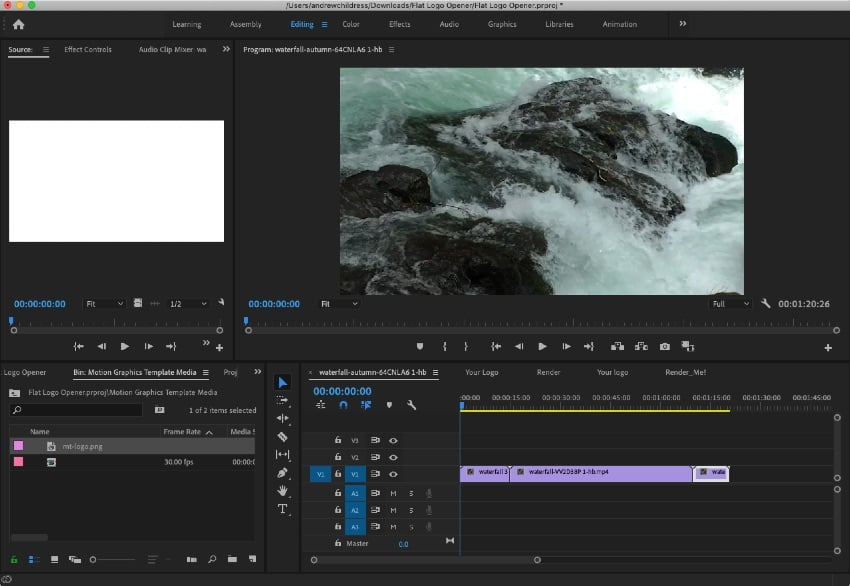
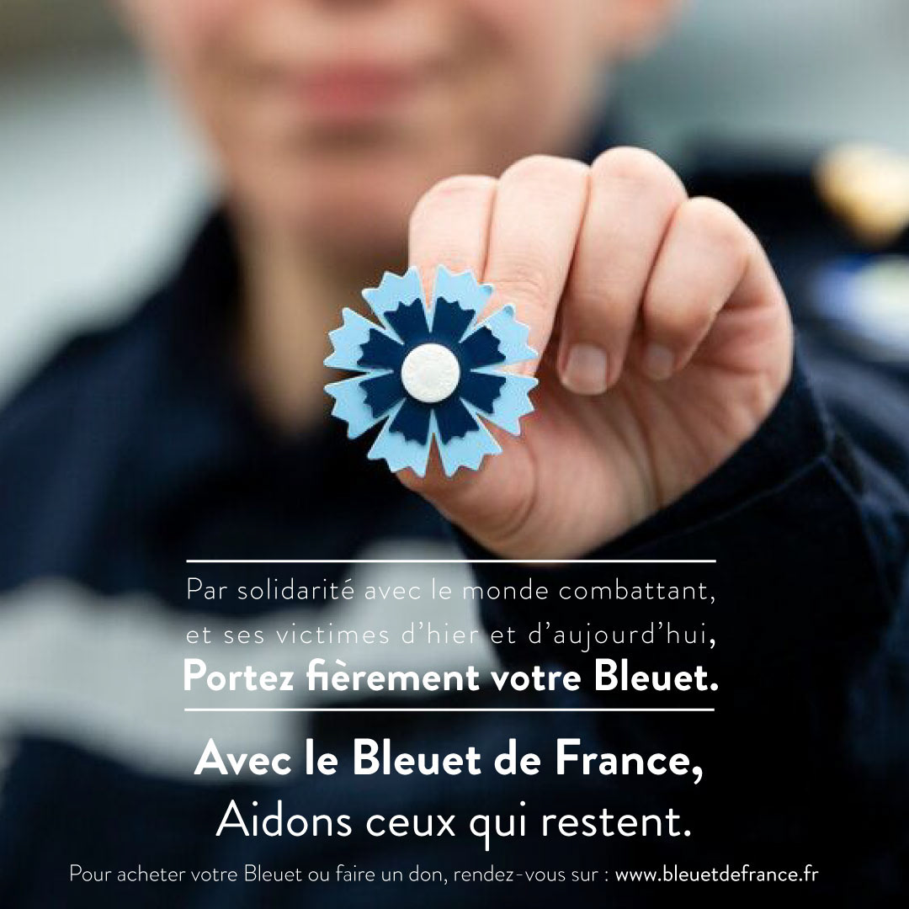

Graphisme
Supports visuels
Affiches, mises en page, presentations et supports pour le print ou le numerique.
Creation numerique
Graphiste multimedia
Je realise des supports de communication, des contenus video et des visuels 3D avec une attention particuliere a la clarte, au rythme et a la lisibilite.
Projets
Une selection de travaux en communication visuelle, video et production multimedia.
Parcours
Des projets realises autour des supports de communication, de la video et des travaux graphiques.


Competences
Graphisme, video, 3D et organisation de production selon les besoins du projet.
Graphisme
Affiches, mises en page, presentations et supports pour le print ou le numerique.
Video
Montage, rythme et habillage graphique pour des contenus clairs et efficaces.
3D
Modelisation, rendus et elements 3D pour enrichir des supports ou des presentations.
Infos utiles
Pour consulter le CV, retrouver les coordonnees et lire rapidement quelques reperes sur le parcours.
CV
Le parcours, la formation et les experiences en version PDF.
Coordonnees
Mail, telephone, site et adresse dans une page dediee.
Experience en production visuelle et environnement multimedia.
Supports, videos, infographies et contenus digitaux realises.